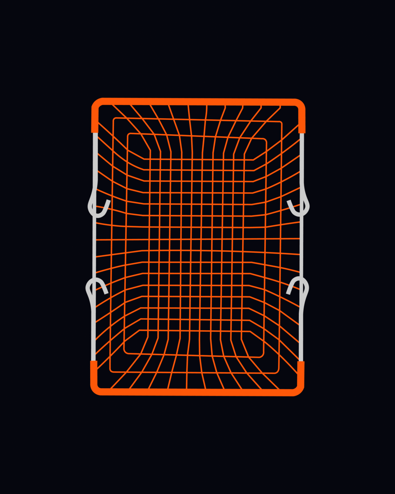
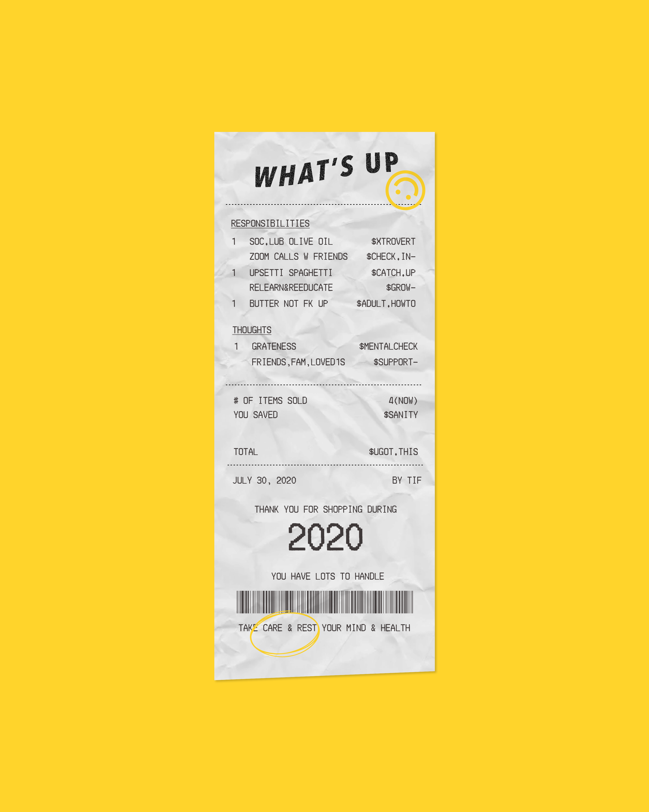
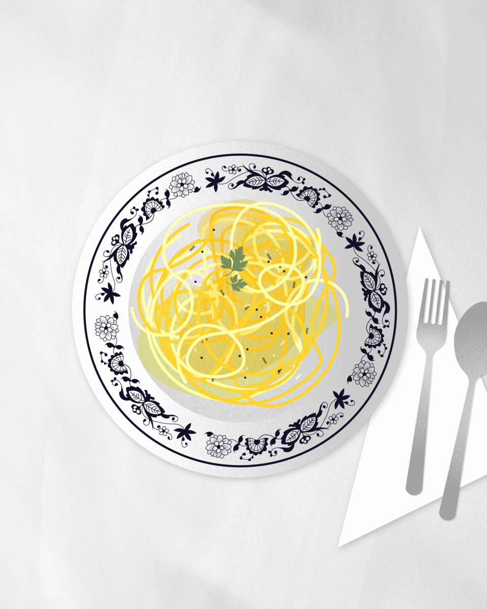

Series — 2020
Meal for 2020
A 3 part graphic series dedicated to some stressors and responsibilities I've had so far this year. I also aimed to explore the use of texture in my graphics and quirky rebranding of notable food brands.
Role
Graphic Artist
Tools
Adobe Illustrator
Timeline
1 week, Jul


